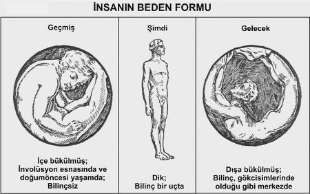

Böylece bedenin geri kalan kısmı, sindirim esnasında büyük bir ölçüde yaşam sıvısından mahrum kalır. Kanı beyne süren Ego’dur. Bunu şöyle ispatlayabiliriz: Bir insanı, iki ayağı üzerinde terazi biçiminde dengede bulunan bir masaya yatıralım. Beden uykuya daldığında masa, ayaklar yönünde aşağıya inecek, kafa da yukarıya çıkacaktır. Cinsel birleşme sırasında kan, cinsel organlar etrafında birikir. Tüm bu örnekler Ego’nun, uyanık olunan saatler boyunca kan aracılığıyla yoğun bedende çalıştığını ve onu kontrol ettiğini gösterir. Kanın büyük kısmı Ego’nun o an üzerinde faaliyet gösterdiği organa gider.
712) Yer Evresi’nin Satürn Devrinde yoğun bedenin yeniden oluşturulmasının amacı, yoğun bedenin zihin tarafından kapsanabilmesini sağlamaktır. Satürn Devri, beynin ön tarafının inşası ve sinir sisteminde yeni başlayan bölünme için ilk tepiyi (impulse) verir. Bundan sonra sinir sistemi, iki alt-bölümle (istençli ve sempatik) görünür hale gelir. Sadece sempatik sinir sistemi Ay Evresi’nde hazırlanmıştır. Yoğun bedeni sadece, dışarıdan uyarıcıların kontrolü altında otomatik hareket eden bir makine olmaktan çıkarıp olağanüstü uyumlu ve Ego tarafından yönlendirilebilen ve kontrol edilebilen bir enstrüman haline dönüştüren istençli sinir sistemi, şimdiki Yer Evresi’ne kadar insana eklenmemişti.
713) Bu yeniden inşa çalışmasının ana kısmı Form’un Efendileri tarafından gerçekleştirildi. Satürn Evresi’nde en aktif Yaratıcı Hiyerarşi, Alev’in Efendileri; Güneş Evresi’nde Bilgeliğin Efendileri, Ay Evresi’nde Bireyselliğin Efendileri iken Yer Evresi’nde en aktif Yaratıcı Hiyerarşi, Form’un Efendileri’dir.
714) Yer Evresi her şeyden önce Form Evresi’dir. Zira evrimin form ya da madde tarafı, en büyük ve en anlamlı durumuna burada erişmiştir. Burada ruh artık en çaresiz ve en bastırılmış haldedir ve Form, en baskın faktördür. Form’un Efendileri’nin önemi bu yüzdendir.
Yer Evresi’nin Güneş Devri
715) Bu devir boyunca yaşam beden, tohumlanan zihinle uyum sağlamak üzere yeniden inşa edilmiştir. Yaşam beden, yoğun bedene daha da benzer biçimde biçimlendirilmiştir. Böylece yaşam beden, yoğun beden ruhsallaştıktan sonra, Jüpiter Evresi boyunca en yoğun araç olarak kullanılmaya hazır hale gelmiştir.
716) Ay Evresi’nde insan olan melekler, bu yeniden inşada Form’un Efendileri’nden yardım aldılar. Yaşam bedenin organizasyonu, etkinlik bakımından şimdi yoğun bedene en yakın olan organizasyondur. Bu konu hakkında bazı yazarlar yaşam bedeni bir bağ olarak adlandırmışlar ve onun yoğun beden için sadece bir form olduğunu ve ayrı bir araç olmadığını iddia etmişlerdir.
717) Biz eleştirmek istemiyoruz, ancak evriminin şimdiki safhasında insan, normalde yaşam bedeni ayrı bir araç olarak kullanamaz. Çünkü o, her zaman yoğun bedenin içinde kalır. Yaşam beden, yoğun bedenden tamamen çekip çıkarılabilseydi bu, yoğun bedenin ölümüne yolaçardı. Ancak, yaşam bedenin yoğun bedenle çok sıkı bir şekilde bağlı olmadığı bir zaman da vardı ve biz hemen bu zamandan bahsedelim.
718) Bizim dünyâmızın, önceden Lemurya ve Atlantis Çağları olarak adlandırdığımız çağları boyunca insan, iradedışı bir durugörürdü. Bunun nedeni de onun, yoğun bedeni ile yaşam bedeni arasındaki gevşek bağdı. (O zamanın öğretmenleri, iradeli öğrencilere bu bağın nasıl daha da gevşetileceğini öğretiyorlardı.)

719) O zamandan sonra insanların büyük çoğunluğunda yaşam beden, yoğun bedenle çok daha sıkı olarak bağlandı. Ancak duyuların tamamında bağlantı gevşektir. Ruhsal insanla sıradan insan arasındaki farkı yaratan da bu gevşek bağdır. Sıradan insan beş duyu dışındaki titreşimleri algılayamaz. Tüm insanlar, taşıyıcılarla olan bu sıkı bağlantı evresinden geçmek ve bundan dolayı meydana gelen bilincin sınırlılığını deneyimlemek zorundadırlar. Bu yüzden iki tür duyu vardır: Birincisi henüz maddenin tuzağına tam bir şekilde düşmemiş olanlar. Buna örnek olarak Hinduların ve Kızılderililerin pekçoğunu verebiliriz. Onlar, belli düşük bir derecede durugörürlüğe sahiptirler, doğanın seslerine karşı duyarlıdırlar ve evrimin öncü kolunda bulunanlardır. İkinci tür duyu da maddenin en derin noktasından ortaya çıkar ve kendi arasında ikiye ayrılır: Zayıf iradeyle pasif bir şekilde gelişmiş olanlar. Bunlar başkalarının yardımıyla istençsiz sinir sistemiyle bağlantılı olan solar pleksus’u ya da diğer organları yeniden uyandırırlar. Bunlar, yetenekleri üzerinde kontrole sahip olmayan istençsiz durugörürler ve medyumlardır. Ve de geriye doğru giderler. Diğer grup da kendi iradesi ve kendi bilinciyle istençli sinir sistemiyle bağlantılı organların titreşimsel güçlerini açığa çıkaranlardır. Bunlar deneyimli okültistlerdir ve kendi bedenlerini kontrol ederler ve kendi durugörür yetilerini ne zaman isterlerse kullanabilirler. Ve de istençli veya eğitimli durugörürler olarak adlandırılırlar.
720) İnsan, şimdi yoğun bedeni üzerinde nasıl işgörüyorsa, Jüpiter Evresi’nde de aynı şekilde yaşam bedeni üzerinde işgörecektir. Doğada hiçbir gelişim aniden gerçekleşmediğinden bu iki bedenin ayrım süreci şimdiden başlamıştır. Yaşam beden bundan sonra, yoğun bedenin günümüzde olduğundan çok daha yüksek dereceli bir etkinlik kazanacaktır. Çok daha fazla uyum yetisine sahip bir araç olduğundan, ruh için bu bedeni, yoğun bedeni kullanmanın mümkün olmadığı bir şekilde kullanmak olanaklı olacaktır.
Yer Evresi’nin Ay Devri
721) Burada Ay Evresi tekrarlandı. Her periyodun D Küresi’ndeki koşullara benzer koşullar, daha yüksek bir seviyede yeniden meydana geldi. Bu devirde de aynı türden ateş-sis atmosfer, aynı alevli çekirdek bulunmaktaydı. Daha gelişmiş varlıkların bu gelişimlerine uygun, ancak bizim insanlığımız mertebesindeki varlıklar için imkânsız olan bir oran ve hızda ilerlemelerini sağlamak için Küre’nin aynı şekilde iki parçaya bölünmesi gerçekleşti.
722) Bu devirde Baş Melekler (Güneş Evresi’nin insanları) ve Form’un Efendileri, Arzu Bedenin yeniden inşasını üzerlerine aldılar, ancak bu işte yalnız değillerdi. Küre’nin ikiye bölünmesi gerçekleştiğinde gelişen varlıkların bazılarında da benzer bölünme gerçekleşti. Daha önce de belirttiğimiz gibi bölünmenin gerçekleştiği yerde Form, içte oturan bir ruhun aracı olmaya hazırdı. Bu amacı sağlamak için Zihnin Efendileri (Satürn Evresi’nin insanları) arzu bedenin yüksek olan kısmına sahip oldular ve ona ayrı bir benlik ektiler. Bu benlik olmaksızın insan, tüm görkemli olasılıklarıyla hiçbir zaman varolamazdı.
723) Böylece Zihnin Efendileri aracılığıyla Ay Devrinin bundan sonraki kısmında ayrı kişiliğin ilk tohumu, arzu bedenin yüksek kısmına ekilmiş oldu.
724) Baş Melekler arzu bedenin aşağı kısmında faaliyet gösterdiler ve saf hayvansal arzuları verdiler. Onlar aynı zamanda bölünmenin olmadığı arzu bedenler üzerinde de çalıştılar. Baş Meleklerden bazıları, varlıklar üzerinde dışarıdan çalışan hayvan grup-ruhlarının araçları oldular, ancak bireysel ruhun insan bedenine girdiği gibi onlar, tamamen hayvan formlarına girmediler.
725) Arzu beden, tohum zihnin kendisine nüfuz edebilmesi için yeniden inşa edildi. Zihin, Yer Evresi boyunca önceden bahsettiğimiz bölünmeyi gerçekleştirebilen tüm arzu bedenlere yerleştirildi.
726) Daha önce de açıklandığı gibi arzu beden, organize olmamıştır ve oval bir biçime sahiptir ve yoğun bedeni merkezinde karanlık bir benek gibi taşımaktadır. Bu tıpkı yumurtanın akının, sarısını çevrelemesine benzer. Bu oval bedende, Yer Evresi’nin başlangıcında görünmeye başlamış bir dizi duyu merkezi bulunmaktadır. Ortalama bir insan varlığında bu merkezler sadece bir nehirdeki girdaplar gibi gözükürler ve uyanmış değillerdir. Bu yüzden arzu beden tarafından ayrı bir bilinç aracı olarak kullanılamazlar. Bu merkezler uyandıklarında dönen girdaplar olarak görünürler.
Devirler Arasındaki Dinlenme Aralıkları
727) Şimdiye dek sadece Evreler arasındaki Kozmik Gecelerden bahsettik. Satürn ve Güneş Evreleri arasında bir dinlenme ve sindirme aralığı bulunduğunu gördük. Yine Güneş ve Ay Evreleri arasında da bir Kozmik Gece bulunmuş olduğundan bahsettik. Fakat Evreler arasındaki Kozmik Gecelere ek olarak devirler arasında da dinlenme aralıkları bulunur.
728) Evreleri, insanın farklı bedenlenmelerine (enkarnasyon); Evrelerin aralarındaki Kozmik Geceleri de ölümler ve doğumlar arasındaki sürelere benzetebiliriz. Bu durumda Devirler arasındaki aralıklar da gündüzlerin arasındaki gecelere benzerler.
729) Bir Kozmik Gece başladığında tüm tezahür etmiş (ortaya çıkmış, manifest etmiş) şeyler, tekrar homojen bir kitle haline çözünürler. Kozmos (evren), tekrar Kaos olur.
730) Ruha evrimleşme (gelişme) imkânı veren, maddenin bu ilksel haline geri dönüşüdür. Aktif tezahürün (manifestasyon) kristalleşme süreci sınırsızca devam edip gitseydi bu, ruhun ilerlemesi için aşılamaz bir engel haline gelirdi. Madde, ruhun çalışmasının artık çok zor olduğu belli bir dereceye kadar her yoğunlaştığında ruh, tükenmiş olan enerjisini geri çeker. Bu tıpkı, sert bir metali delmeye çalışan elektrikli bir matkaba benzer. Katı metali daha fazla delemeyen matkabın, yeniden eski gücüne kavuşması için delmeye çalıştığı metalden çekilmesi gerekir. Böylece matkabın metalin daha da derinine inebilmesi mümkün olur.
731) Madde içerisinde, gelişen ruhun kristalleştirici enerjisinden kurtulmuş bir haldeki kimyasal güçler, maddeyi ilksel haline döndürerek Kozmos’u Kaosa çevirirler. Böylece yeniden hayat bulan bakir ruhlar, yeni bir Tezahür Günü başladığında yeni bir başlangıç yapabilirler. Önceki Evrelerde ve Devirlerde kazandığı deneyim, ruhun bu Evrelerde ve Devirlerde en son eriştiği noktayı görece hızlı bir şekilde inşa edebilmesini sağlar. Aynı zamanda da topladığı deneyimin dikte ettiği değişiklikler aracılığıyla daha da ilerlemesi kolaylaşır.
732) Böylece Yer Evresi’nin Ay Devri sonunda tüm Küreler ve tüm yaşam Kaos’a geri döndü ve Dördüncü Devrin başlangıcında yeniden ortaya çıktı.
Yer Evresi’nin Dördüncü Devri
733) Evrim planının tarif edilemez karmaşıklığında, sonsuz sayıda spiraller içinde spiraller vardır. Böylece tekrarlama ve dinlenme işinin her Devirde farklı Kürelerde de uygulandığını öğrenmek bizim için sürpriz olmayacaktır. Yaşam dalgası bu Devirde A Küresi’nde tekrar belirdiğinde Satürn Evresi’ndeki gelişimden geçer. Ardından Küre’nin tamamen yokedilmesi değil de değişimi anlamına gelen bir dinlenme aralığından sonra, Güneş Evresi’nin çalışmasının tekrarlandığı B Küresi’nde belirir. Tekrar bir dinlenme aralığından sonra yaşam dalgası C Küresine geçer ve Ay Evresi’nin çalışması tekrar edilir. En sonunda yaşam dalgası, bizim Dünyamız olan D Küresi’ne ulaşmıştır. Ve bu zamandan önce Yer Evresi’nin gerçek çalışması başlamamıştır.
734) Bundan sonra bile spiral içinde spiral, yaşam dalgasının C Küresi’nden buraya varışından hemen sonra başlamasını imkânsız kılar. Çünkü zihin tohumunun verilmesi, aslında dördüncü Çağ’a kadar gerçekleşmemiştir. İlk üç Çağ boyunca daha yüksek bir seviyede Satürn, Güneş ve Ay Evrelerinin tekrarı meydana gelmiştir.